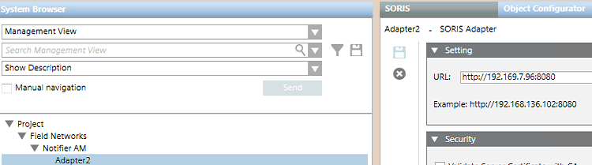

Create the Adapter under the Network
You can configure multiple adapters under one SORIS network. Skip this step if you want to use an existing adapter.
- Select Project > Field Networks > [SORIS network].
- In the Object Configurator tab, click New
 and select New SORIS Adapter.
and select New SORIS Adapter. - In the New Object dialog box, enter a name and description, and click OK.
- The newly created adapter is added to System Browser. The adapter starts automatically as a Windows service.
- Select the newly created adapter and click the SORIS tab.
- In the URL field, enter the IP address of the computer from which the network adapter is run using the following format: https://<IP address>:<port number>.
NOTE: In the executable window, you can check the correctness of the IP address. The default port number is 8080.
- In the Operation tab, the Online property indicates
Connectedand the property URL displays the IP address configured.
